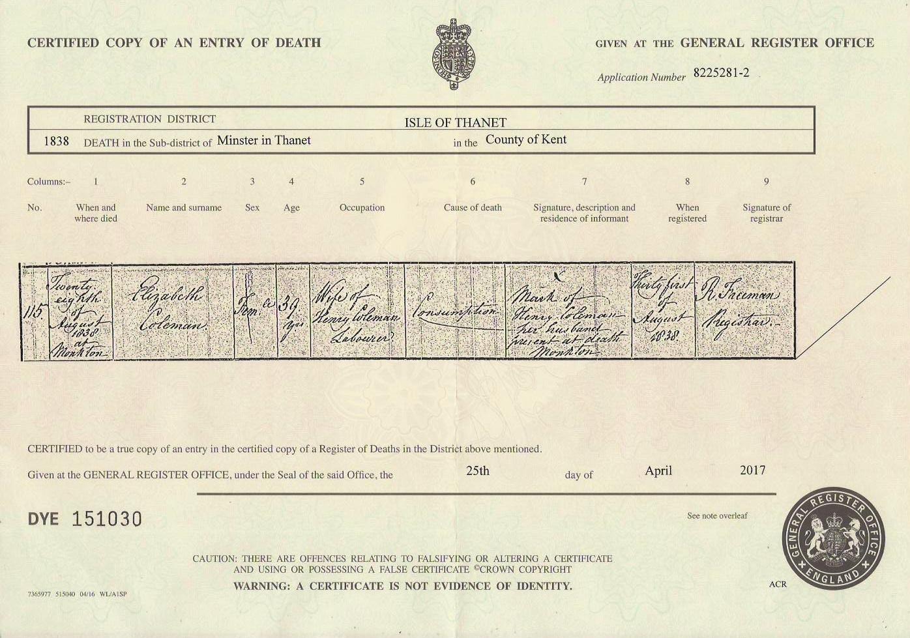
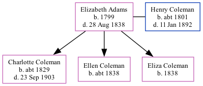

Elizabeth Coleman (née Adams) 1799 - 1838
[ Home ] | [ Calendar ] | [ Surnames Index ] | [ Family History ]Elizabeth Adams, the 3 times great-grandmother of Nigel Horne, was born in 17991,2 and married Henry Coleman (a gardener and domestic with whom she had 3 children: Charlotte, Ellen and Eliza) in St Nicholas-at-Wade, Kent, England on Oct 14, 18285 (St Nicholas Parish Church KFHS CD17).
She died on Aug 28, 1838 in Monkton, Kent3,4 (consumption) and was buried there at St Mary Magdalene Church on Sep 4, 18386,7.
Children
- Charlotte was born c. 1829
- Ellen was born c. 1838
- Eliza was born in 1838
Citations
- East Kent Burial Index - Findmypast
- Kent, Canterbury Archdeaconry burials 1538-1988 - Findmypast
- England & Wales deaths 1837-2007 - Findmypast
- England & Wales, FreeBMD Death Index: 1837-1915 Online publication - Provo, UT, USA: The Generations Network, Inc., 2006.Original data - General Register Office. England and Wales Civil Registration Indexes. London, England: General Register Office. © Crown copyright. Published by permission of the Cont
- Public Member Trees Online publication - Provo, UT, USA: The Generations Network, Inc., 2006.Original data - Family trees submitted by Ancestry members.Original data: Family trees submitted by Ancestry members.
- Kent, Canterbury Archdeaconry burials 1538-1988 - Findmypast
- England Deaths & Burials 1538-1991 - Findmypast
Media
Elizabeth Adams - death certificate

England Marriages 1538-1973 - R_848220107
England Marriages 1538-1973 - R_848220107/2
Kent, Canterbury Archdeaconry burials 1538-1988 - GBPRS/CANT/D/95335647
England & Wales deaths 1837-2007 - BMD/D/1838/3/AN/000356/003
East Kent Burial Index - GBPRS/D/407025472/1
England Deaths & Burials 1538-1991 - R_276552535
Family Tree
Generated by Ged2Site. Last updated on Jul 20, 2025